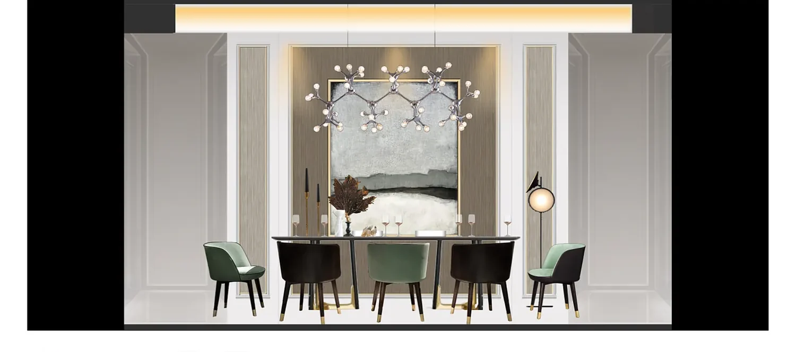

Portfolio / Private residence
Private residence FF&E presentation.
Selected visual material supporting furniture, finish and styling conversations during residential design development.

Reviewing the room as a complete composition
A residential presentation image can bring architecture, furniture, finishes, art and styling into the same discussion. This makes it easier to review visual balance and the intended atmosphere than evaluating individual product references in isolation. Close alignment between the plan, furniture schedule and material direction is important before image refinement.
Scope notes
The public images are selected presentation visuals rather than a complete proposal package. Identifying information has been removed for confidentiality, and the imagery should not be read as documentation of a completed built project. For a new scope, we confirm the required rooms, view list, source files and review responsibilities first.
Read about 3D interior rendering or use the source-file checklist.